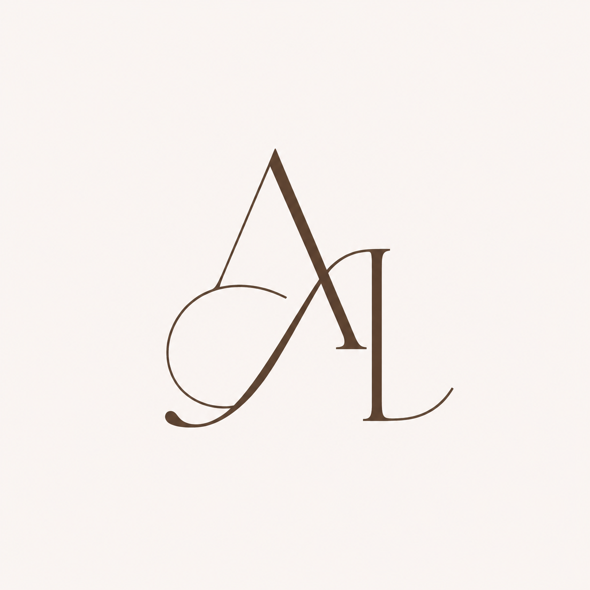

Клиент не дошёл до обращения
Он не нашёл компанию, не понял предложение, увидел противоречивые сведения или не смог связаться.
- Реклама работает, а обращений мало
- В интернете видны конкуренты, но не вы
- Цена, условия и следующий шаг непонятны
Разбираем две зоны: что происходит внутри процессов и что видит клиент на пути к покупке. Отделяем предположения от фактов и показываем, что исправить в первую очередь.

У работающего и начинающего бизнеса разные задачи. Выберите свой сценарий, чтобы увидеть подходящие решения и цены.
Одни клиенты уходят до обращения. Другие обращаются, но не доходят до оплаты. Эти проблемы выглядят похоже в цифрах, но требуют разной работы.
Он не нашёл компанию, не понял предложение, увидел противоречивые сведения или не смог связаться.
Ответ пришёл поздно, следующий шаг потерялся, сотрудники действовали по-разному или клиенту не вернулись повторно.
Каждый элемент по отдельности может выглядеть рабочим. Проблема появляется при переходе клиента между ними.
Мы ищем не отдельную ошибку, а место, в котором разрывается путь к покупке.
Мы сопоставляем путь клиента с тем, как бизнес принимает и обрабатывает обращение.
Как человек находит компанию, понимает предложение, начинает доверять, связывается, записывается и получает ответ.
Поиск, карты, сайт, отзывы, социальные сети и ответы ИИ служат источниками доказательств. Сама услуга шире проверки этих площадок.
Как бизнес принимает обращение, передаёт клиента следующему сотруднику, ведёт к решению и возвращается с повторным контактом.
Смотрим на ответственность, единый порядок работы и точки, которые требуют постоянного участия собственника.
Вы увидите, где находится проблема, чем она подтверждена, насколько срочно её исправлять и кто может это сделать.
На старте легко заказать сайт, рекламу и оформление раньше, чем стало понятно, что именно покупает клиент и почему он должен выбрать вас.
Мы не предлагаем собирать всё сразу. Сначала определяем предложение и путь до обращения, затем выбираем необходимые точки присутствия.
Вы получаете ясное предложение, приоритеты и план первых 30 дней без обещаний мгновенной прибыли.
Методика охватывает путь от исходных данных о компании до реального обращения и проверки тайным покупателем. Но её ценность не в количестве пунктов, а в правилах работы с фактами.
Фиксируем исходные данные, запросы и конкурентное окружение.
Проверяем присутствие и то, что видит клиент.
Находим расхождения между источниками.
Проверяем обращение, запись и реальный ответ.
Это демонстрация структуры, а не кейс клиента. В реальной работе каждая строка связана с сохранённым доказательством.
Ни одного отзыва, которого не было. Ни одной фотографии команды, нарисованной нейросетью. Ни одной цифры результата, которую мы не можем показать в отчёте. Не можем подтвердить — не пишем.
В отчёте клиента нет находки без доказательства. На сайте агентства нет доказательства, которое мы придумали сами.
Анна рассматривает проблему не как отдельную ошибку сайта или продаж, а в связке с продуктом, процессами и работой команды. Под конкретную задачу она подключает специалистов агентства.
Все форматы платные. Выберите ситуацию, чтобы увидеть подходящую линейку.
Основной разбор ситуации лично с Анной и письменный порядок действий.
Компактная проверка ключевых точек, где клиент может не дойти до обращения.
Исследование, согласованный план изменений, реализация и повторная проверка.
Разбор идеи, предложения и первых действий без лишних расходов.
ВыбратьПредложение, аудитория, путь до обращения и план первых 30 дней.
ВыбратьПодготовка согласованных точек присутствия и связи с клиентом.
ОбсудитьПервый содержательный шаг платный. До него мы уточняем только организационные детали и исходную ситуацию.
Если вашей ситуации здесь нет, опишите её в заявке. Анна определит, имеет ли смысл начинать работу.
Отдельные страницы и контакты проверить можно. Методика агентства нужна, чтобы воспроизвести путь незнакомого клиента, найти противоречия между этапами, сохранить доказательства и определить, какие находки действительно мешают покупке.
Да. Для начинающего бизнеса действует отдельный сценарий: предложение, первые клиенты, необходимые точки присутствия и план первых 30 дней.
Да. Консультация является самостоятельной платной услугой с письменным результатом. Покупать следующий этап необязательно.
Да. На первичном разборе Анна определит, находится ли причина внутри бизнеса, на пути клиента или сразу в двух зонах.
Для внешней проверки многие этапы проходят без доступов. Если для конкретной задачи понадобятся внутренние данные или системы, состав и правила доступа согласовываются отдельно.
Мы не публикуем внутренние данные клиентов без прямого разрешения и не заменяем их вымышленными историями. Вместо этого показываем методику и структуру результата.
Анна Лазарева лично разберёт вашу ситуацию и предложит подходящий платный формат.